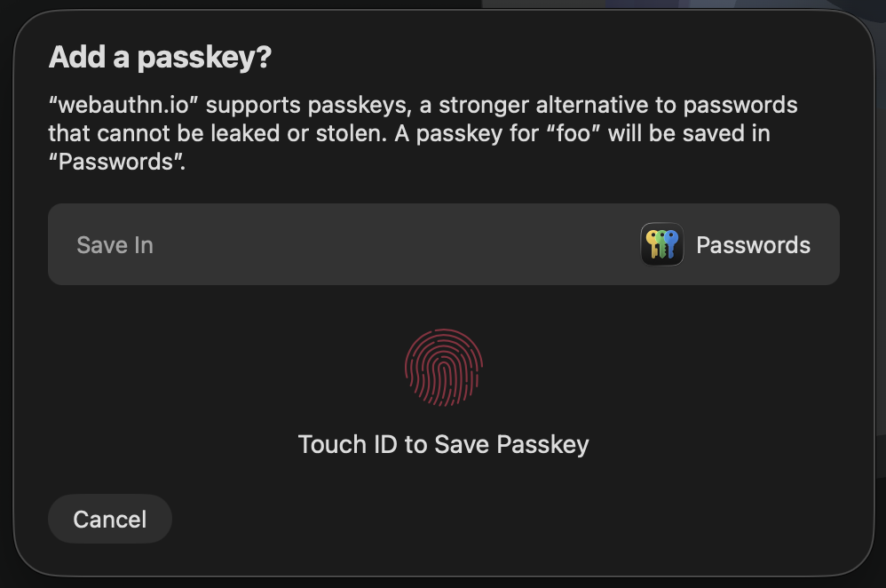
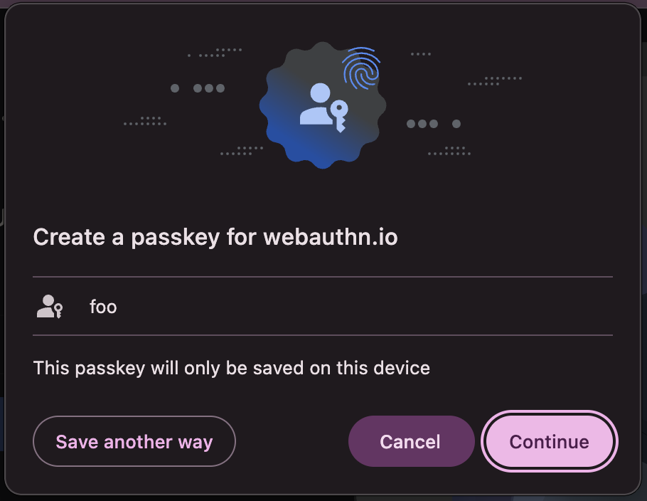

Nobody knows what they are
The average user can't tell you what a passkey is, whereas even an eight-year-old can understand passwords. When a browser prompts "Save a passkey?", nobody knows what they're agreeing to or where it's being saved. Can you remember whether you saw the Apple prompt
or the Chrome prompt
?
You don't own your credentials
Apple passkeys live in iCloud Keychain. Chrome passkeys live in Google Password Manager. 1Password and Lastpass don't allow exporting passkeys. The passkey standard doesn't mandate portability, so moving between ecosystems is painful or impossible, and most users don't even know which one they're using.
They don't work reliably across devices
Some websites already require passkeys, but nobody tells you what happens when you try to sign in from a different device. You create a passkey on your phone, then sit down at your laptop and... nothing. Drop your phone in a lake and you might be locked out permanently. Cross-device sync might work — if both devices share the same passkey software, and if you can remember where the passkey was saved in the first place. Most users won't know any of this until it's too late.
The standard encourages bad practice
The passkeys standard lets websites stipulate whether passkeys be stored on this device (platform) or another device (cross-platform). Demanding that passkeys be stored on this device while using a library terminal or a public kiosk is effectively a noop. Likewise, forcing the user to store passkeys on another device is unnecessary friction. This shouldn't be a part of the standard, the user should always have a choice.
The intention behind passkeys is good: public-key authentication for the masses; but the reality of the ecosystem lets them down. We can do so much better.
{kind=link}
{kind=link}